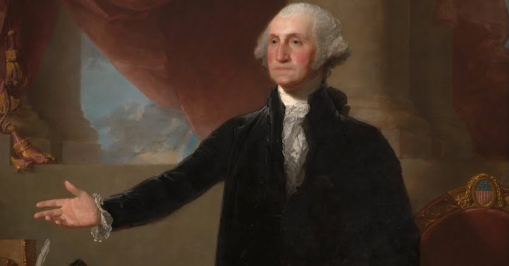

- 1. At the age of just 11 he owned slave as he inherited them from his father, after his passing.
- 2. He did not have wooden teeth they were instead made from gold, ivery, animal bones and other human teeth (bought from slaves)
- 3. After his presidency he started a whisky distillery on Mt.Vernon
- 4. Washington stepped down to show others they should only have a max 2 sessions as president `